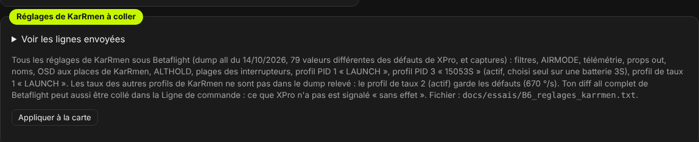
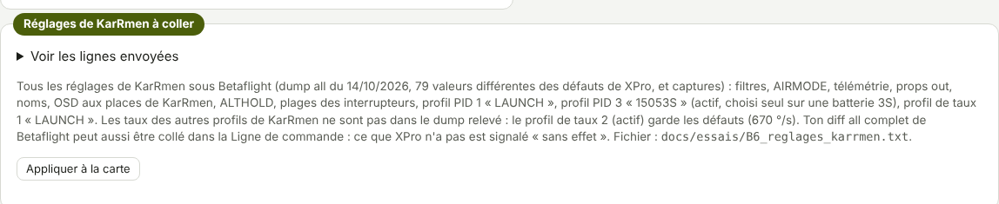
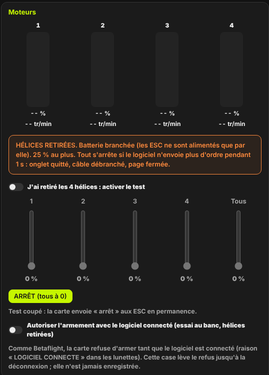
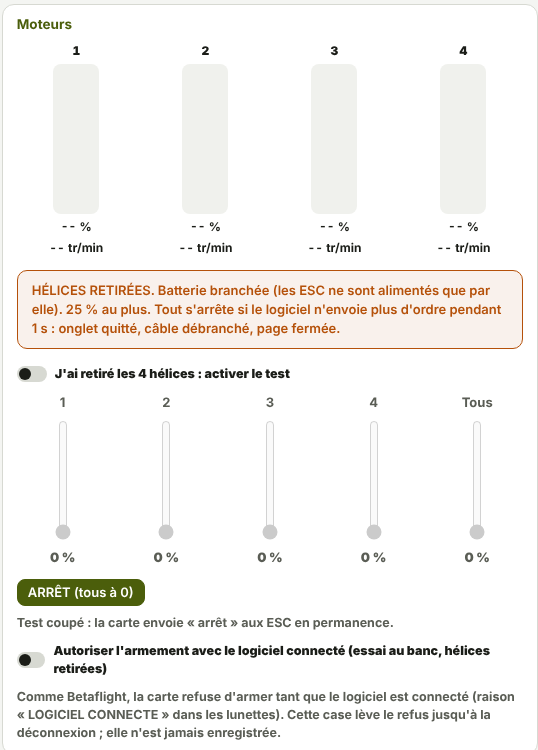

TRUEGLIDE
TRUEGLIDE Mise en route : de Betaflight à XPro
Passer un drone de Betaflight à TrueGlide XPro en six étapes : sauvegarder la carte, flasher, se connecter, recoller ses réglages, essayer au banc hélices retirées, puis voler en ANGLE, dehors. Chaque étape se fait dans le logiciel XPro.
L'exemple suivi est celui de KarRmen (SpeedyBee F405 Mini, récepteur ExpressLRS, vidéo Walksnail), passé de Betaflight à XPro entre le 14 et le 18 octobre 2026. Les chiffres cités sont ses mesures.
Avant de commencer
- Le logiciel XPro : un seul fichier
.html, à ouvrir dans Chrome ou Edge sur ordinateur. Le firmware est inclus dans ce fichier. - Un câble USB de données, en bon état. Les coupures de liaison vues aux essais venaient du câble.
- Le
diff allde Betaflight, copié dans un fichier texte. Gardez aussi ledump all. - Hélices retirées pour toutes les étapes jusqu'au premier vol.
1. Sauvegarder la carte
La sauvegarde complète est une copie exacte de toute la mémoire de la carte (1 Mo) : firmware, réglages, calibrages. Elle permet de remettre la carte exactement comme avant, Betaflight compris.
- Brancher la carte en USB. Dans le logiciel, ouvrir l'onglet Flasher le firmware.
- Cadre « Sauvegarde complète de la carte » : cliquer Sauvegarder la carte. La carte passe en mode DFU, elle est lue deux fois (les deux lectures doivent être identiques), puis redémarre telle quelle. Rien n'est écrit dans la carte.
- Le fichier
sauvegarde_complete_….binarrive dans le dossier Téléchargements. Le journal sous le cadre « Flasher la carte par USB » donne son empreinte SHA-256 : la noter. - Copier le fichier sur l'ordinateur et sur une clé USB.
Pour vérifier plus tard que le fichier est intact, sous Windows, dans une invite de commandes :
certutil -hashfile sauvegarde_complete_….bin SHA256
La suite de chiffres affichée doit être identique à celle du journal. Pour KarRmen : fichier de 1 048 576
octets fait le 14/10/2026, contrôlé avec certutil le 18/10, empreinte identique (elle commence par
b72c9a56).
2. Flasher XPro
- Cliquer Connexion et choisir le port de la carte (encore sous Betaflight).
- Onglet Flasher le firmware, cadre « Flasher la carte par USB » : laisser coché Firmware inclus, puis Flasher.
- Le logiciel envoie à Betaflight la demande de redémarrage en mode DFU, puis efface, écrit, relit pour vérifier et redémarre la carte. Sur KarRmen, le 14/10/2026, ce passage en DFU a marché du premier coup, sans bouton BOOT.
- La première fois, Chrome demande de choisir « STM32 BOOTLOADER ». Si le bouton Autoriser la carte DFU apparaît, cliquer dessus et choisir cette carte.
Tous les détails (autre fichier .hex, bouton BOOT, restauration) : Flasher le
firmware.
3. Connexion
Débrancher puis rebrancher l'USB. Cliquer Connexion et choisir le port « TrueGlide XPro » (ou COM… sous
Windows). Dans l'onglet Ligne de commande, version répond par exemple :
TRUEGLIDE 0.8.3-banc (01d85e9) SPEEDYBEEF405MINI
Juste après Betaflight, status peut afficher « Reglages : ENREGISTREMENT ILLISIBLE (autre firmware
ou abime) : valeurs par defaut ». C'est attendu : la place des réglages contient encore ceux de Betaflight, que
XPro ne lit pas. XPro part de ses valeurs par défaut.
Deux choses à faire une fois :
- Onglet Installation, drone posé à plat et immobile : Calibrer l'accéléromètre. Une carte qui bouge pendant le calibrage est refusée, rien ne change.
- Onglet Blackbox : Effacer le journal. La mémoire du journal peut contenir un ancien journal de Betaflight : XPro le signale. Sur KarRmen, il occupait la mémoire au point qu'aucun vol n'était enregistré.
4. Recoller ses réglages
Onglet Ligne de commande : coller tout le diff all de Betaflight dans le champ de saisie.
Le logiciel demande « Envoyer ces N commandes à la carte, une par une ? », puis envoie chaque ligne. Les lignes
qui commencent par # sont des commentaires.
Chaque ligne reçoit une réponse :
| Cas | Réponse de la carte |
|---|---|
| Réglage géré par XPro | La carte répète le réglage avec sa nouvelle valeur. |
| Réglage sans effet dans XPro | Ignore : nom sans effet dans XPro (raison) : accepté, la raison
est donnée (pas de GPS, pas de bandeau LED…). |
| Commande de Betaflight sans équivalent | Ignore : … (commande de Betaflight sans effet dans XPro :
raison), par exemple resource (broches fixées par la carte) ou vtxtable. |
| Valeur hors plage | REFUSE : valeur hors plage, rien n'a change. Une valeur n'est jamais
corrigée en silence. |
Terminer par save (refusé drone armé). La carte répond « Reglages enregistres dans la carte
(enregistrement N) ».
Le dump all de KarRmen compte 592 réglages. Compte du 18/10/2026 (firmware 0.8.3) : 314 gérés, 278 acceptés « sans effet » avec leur raison (GPS 33, OSD HD 26, journal 14, LED 13, télémétrie 11, caméra 10…), 0 inconnu. Son diff all passe donc sans aucun refus.
Les réglages de KarRmen en un clic
L'onglet Réglages de PID contient, en bas, le cadre « Réglages de KarRmen à coller » : les 79 valeurs du dump all du 14/10/2026 différentes des défauts de XPro (filtres, AIRMODE, télémétrie, props out, OSD, plages des interrupteurs, profils PID 1 « LAUNCH » et 3 « 15053S »…). « Voir les lignes envoyées » les affiche.
Appliquer à la carte envoie les lignes une par une, vérifie que la carte a pris chaque valeur, puis enregistre. Le résultat s'affiche dans une fenêtre : « Réglages appliqués, vérifiés (N valeurs relues) et enregistrés dans la carte », ou la liste « PAS PRIS » des lignes refusées. Sur KarRmen, le 17/10/2026 : 80 valeurs relues, enregistrement 9.


5. Essais au banc, hélices retirées
Batterie branchée, USB branché, hélices retirées. Tant que le logiciel est connecté, la carte refuse d'armer (raison « LOGICIEL CONNECTE »). Pour l'essai au banc, onglet Moteurs, cocher « Autoriser l'armement avec le logiciel connecté ». Cette case n'est jamais enregistrée et se coupe à la déconnexion.
- Sens des corrections : armer, gaz à 20 %. Pencher le drone nez vers le bas : dans l'onglet Moteurs, les barres des moteurs avant (2 et 4) montent. Pencher le drone sur la droite : les barres des moteurs de droite (1 et 2) montent. Le drone corrige dans le bon sens.
- Failsafe : toujours armé, gaz à zéro, éteindre la radio. Les moteurs s'arrêtent seuls en moins de
2 s et les lunettes affichent
!FS!. - Pas de réarmement seul : rallumer la radio, interrupteur ARM toujours en haut. Le drone ne réarme pas : il faut baisser puis relever l'interrupteur, comme sous Betaflight.


Le rapport de banc
Pour vérifier la carte seule (USB seulement, sans batterie) : onglet Rapport de banc, Lancer le
rapport, puis tourner la carte à la main pendant les 10 secondes de mesures. Le logiciel envoie
version, status, 20 fois gyro, puis encore status.
Il enregistre le fichier rapport_banc_….txt et copie le texte : l'envoyer tel quel. Si la carte
ne répond pas, le rapport le dit et joint les derniers octets reçus.


6. Premier vol en ANGLE, dehors
Terrain dégagé, herbe rase, personne à moins de 20 m, pas de vent fort. Batterie pleine. USB débranché. Hélices montées dans le bon sens (KarRmen : props out).
- Radio : interrupteur du mode ANGLE actif, ARM en bas, gaz à zéro.
- ARM en haut : le drone arme, les hélices tournent au ralenti.
- Monter les gaz doucement : il décolle droit, sans tourner sur lui-même.
- Stationnaire à 1 ou 2 m pendant 20 s, puis petits mouvements des manches : il répond dans le bon sens.
- Atterrir en descendant les gaz doucement jusqu'au sol, puis ARM en bas.
De retour : batterie, USB, Connexion. Dans la Ligne de commande, status et
journal ; dans l'onglet Blackbox, Télécharger (.bin). Le vol se relit dans le
Visualiseur Blackbox.
Premier vol de KarRmen (V1, firmware 0.8.3, 18/10/2026, à l'intérieur) : stationnaire stable en ANGLE, 10,8 s armé dont environ 9 s en l'air, 1,2 m au plus, gaz vers 26 %, 7,4 A, aucune oscillation au journal, moteurs froids après le vol. L'atterrissage, gaz coupés d'un coup vers 1 m, a fini en chute et en bascule : d'où la descente douce de l'étape 5.
Pour revenir à Betaflight : Restaurer la sauvegarde.